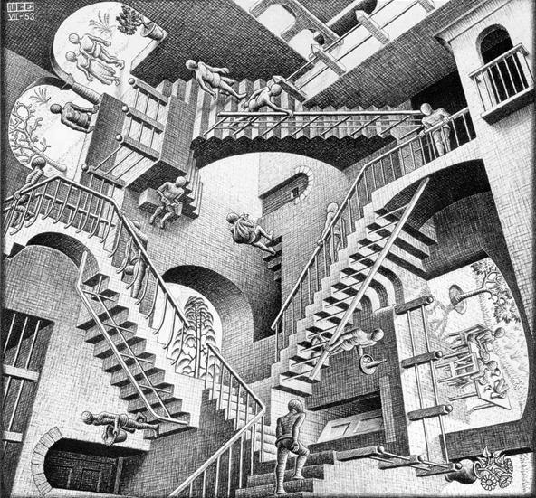

Machine Learning
Input - Data
One needs to specify three critical components: the form of training data available as input; the form of model desired as output; the performance measure or evaluation criterion that will be used to evaluate the model.
Learning Algorithm
The form and content of the data available will give us an idea of choosing which learning algorithms, while the form of model desired limits our choices.

Output - Model
Statistical tests can be performed to rule out inappropriate algorithms. Once we have picked our candidate algorithms, the evaluation criteria is used to select our final model.
A solution
A solution to the problem is then any learning algorithm that takes the specified form of data as input and produces the specified form of model as output.
Supervised Learning
Input - Labeled Data
Supervised learning is the machine learning task of inferring a function from labeled training data. The training data consist of a set of training examples. Each example is a pair consisting of an input object (typically a vector) and a desired output value.
Types - Regression & Classification
Regression takes continuous input; Classification takes categorical input.
Output - Inferred Function
A supervised learning algorithm analyzes the training data and produces an inferred function, which can be used for mapping new examples. This is Predictive Analytics!
An Optimal Solution
An optimal scenario will allow for the algorithm to correctly determine the class labels for unseen instances. This requires the learning algorithm to generalize from the training data to unseen situations in a "reasonable" way.
Unsupervised Learning
Clustering
- K-Means
- Mixture Models
- Hierarchical Clustering
- K-Means
- Mixture Models
- Hierarchical Clustering

Dimension Reduction
Dimension Reduction
- Principle Component Analysis
- Independent Component Analysis
- Non-negative Matrix Factorization
- Principle Component Analysis
- Independent Component Analysis
- Non-negative Matrix Factorization
Customerized Models
- Association Rules
- Google PageRank Algorithm
- Recommender System
- Association Rules
- Google PageRank Algorithm
- Recommender System